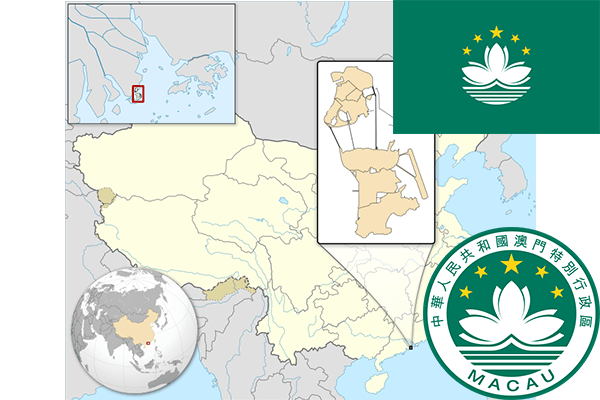

To`liq nomi: Makao Maxsus Adminstrativ Rayoni
Region: Janubiy Osiyo
Mustaqillik kuni: 20-dekabr 1999-yil
Poytaxt: Makao
Maydoni: 27,2 км²
Chegaradosh davlatlari: Xitoy
Aholisi: 541 200 (2014-yil)
Aholi zichligi: 20 044 /км²
Aholining o`rtacha yoshi: 80,77 yil
Rasmiy tili: Xitoy tili
Dini: Buddizm
Pul birligi: Pataka
Telefon prefiksi: +853
Internet domen: .mo
Xalqaro tashkilotlarga a`zoligi: -
Dengiz va okeanlarga chiqishi: Janubiy Xitoy dengizi
YIM: Butun: $44.8 mlrd (2016-yil) Jon boshiga: $73,187
Yirik shaharlari: Makao